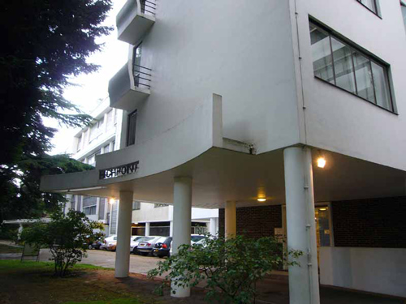

The iconic BBC Broadcasting House opened on 15 May 1932. Designed by George Val Myer, the interiors were the work of Raymond McGrath, an Australian-Irish architect. He directed a team that included Serge Chermayeff and Wells Coates and designed the Vaudeville studio, the associated green and dressing rooms, and the dance and chamber music studios in a flowing Art Deco style.

The Art Deco reception area at the BBC. Raymond McGrath also designed St Ann's Court in Chertsey (as featured in 'The Plymouth Express' and 'Mrs McGinty's Dead').

A historic photo of the reception dating from 1932.

Highpoint 1 was the first of two apartment blocks erected in the 1930s on one of the highest points in London at Highgate. The architectural design was by the Russian-born architect Berthold Lubetkin, the structural design by the Danish engineer Ove Arup and the construction by Kier. It was built in 1935 for the entrepreneur Sigmund Gestetner, but was never used for its intended purpose of housing Gestetner company staff. One of the best examples of early International style architecture in London. (Also used in 'Lord Edgware Dies' and 'The Million Dollar Bond Robbery').

Highpoint 1 (interior).